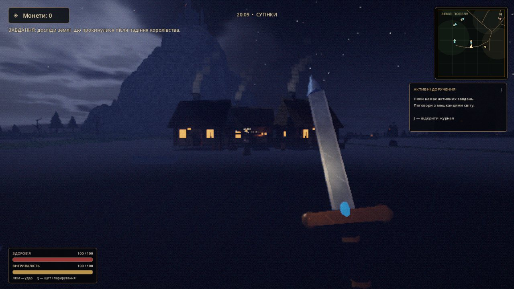
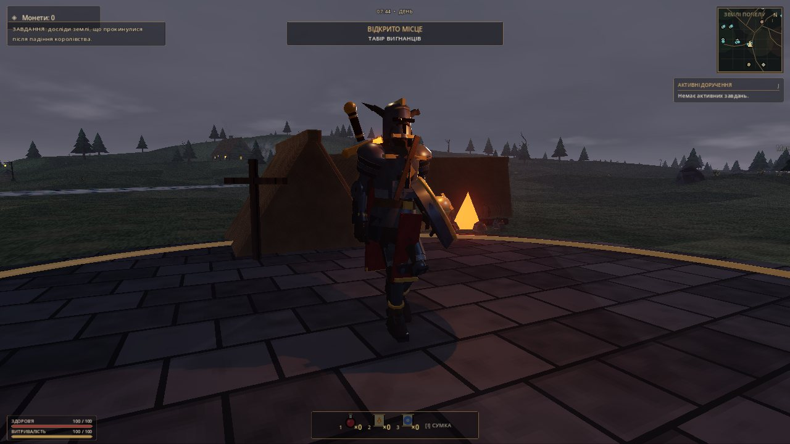
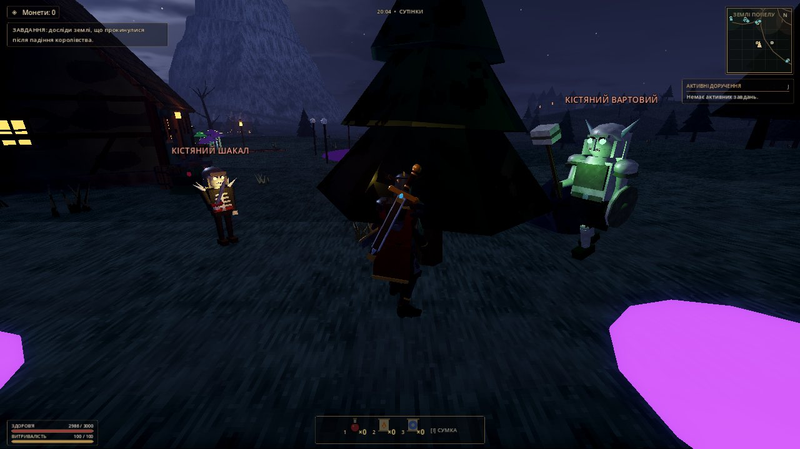
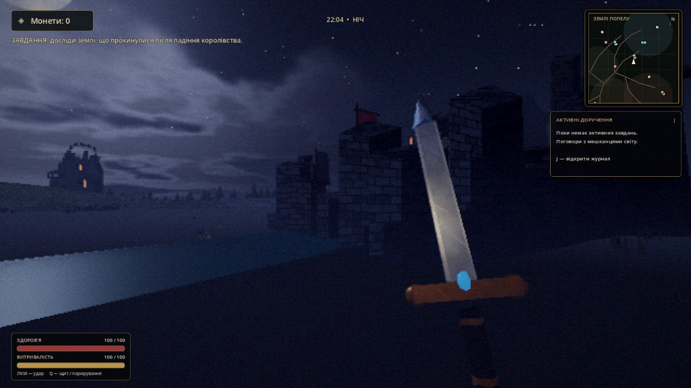
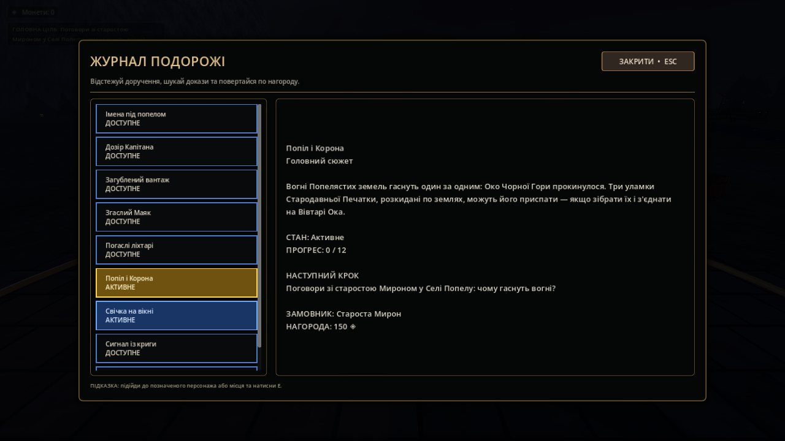
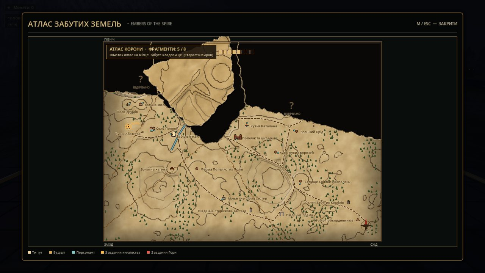
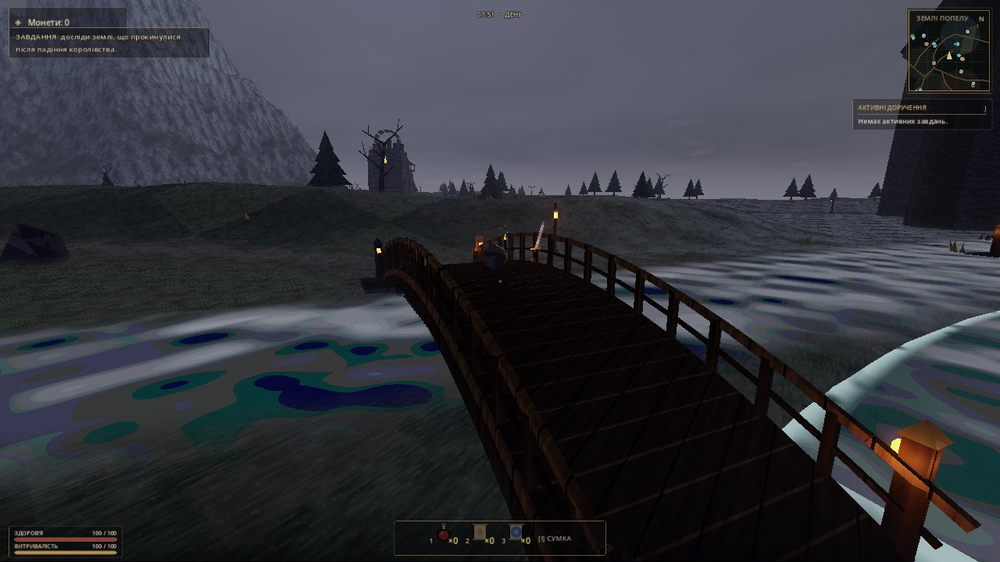
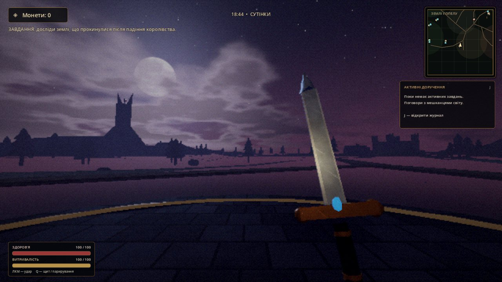
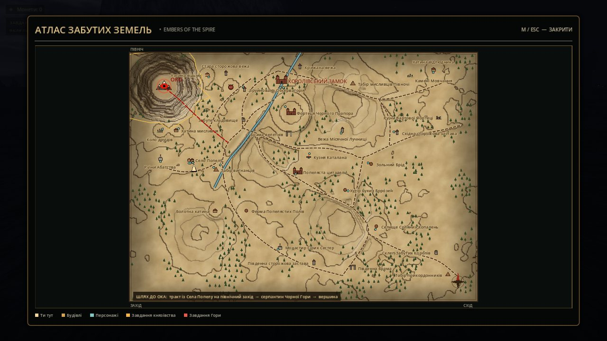

A vast, gloomy world
Villages, bridges, a lake fortress, ruined abbeys and a mountain trail with day and night, fog and weather. Enter huts, rest by the stove, pet a cat.
A PS1-inspired dark fantasy action adventure
The kingdom burned. The mountain remembers.
The lamps of the Ashen Lands are going out, one by one. Somewhere on the Black Mountain, an Eye has opened. Only a torn atlas remembers the way.
The game
Embers of the Spire is a third-person action adventure in the chunky, wobbling style of the PlayStation era: low-poly ruins, vertex jitter, dithered shadows and a torch that is never quite bright enough.
You wake in the Village of Ash, where the roadside lamps are dying. The Order of the Seal once put the Eye to sleep — then tore the only map to its altar into eight pieces and gave them to guardians. Those guardians are now dead, mad or something worse.
Your goal: gather the pieces of the atlas, bind the three shards of the ancient Seal and climb the Black Mountain to face the Eye. Roads are watched, ruins are alive, and the night is long.
What you can do

Villages, bridges, a lake fortress, ruined abbeys and a mountain trail with day and night, fog and weather. Enter huts, rest by the stove, pet a cat.

Sword, shield with timed parries, bow, stamina and armor upgrades. Read the wind-ups, dodge the heavy blows, pick your moment.

A skeletal witch raising the dead from the earth, bone knights, blinking seers, an Ancient Mage who changes tactics, and the Eye Guardian himself.

Hold a gate against waves, wake runic pillars against the clock, break dark obelisks, survive the Bone Pit, follow a white stag, find a lost traveller in the fog.

A 13-step main quest with three mini-bosses, many side quests, mass battles with their own heavy soundtrack, and a finale that turns the dark to dawn.

The map starts in pieces. Bosses and trials guard the fragments, and you watch each one fly back into place — until the Black Mountain is finally revealed.

Buy a horse from the stable-master, ride at walk, trot and gallop (gallop tires it), switch to a first-person view in the saddle — and trample ambushers.

Pixelated rendering, dithering, wobbling vertices, ash and torchlight. Surprise events on the road: ravens, strange voices, towering shapes in the distance.

The world and its history
The Crown of the old kingdom fell, and its ashes still drift over the roads. The Black Mountain rose above the ruins, and on its summit the Eye — a thing the kingdom once put to sleep with a Seal made of three shards.
The Order of the Seal feared that someone would wake it again, so the monks tore the atlas that showed the road to the altar and handed the pieces to the people and knights they trusted most. Now the lamps along the road are going out, the guardians are changed, and the Eye is looking back.
Special enemies
A skeletal witch who keeps her distance, warns with raised arms and raises skeletons out of cracked earth. Interrupt her ritual, or kill her first.
Fast skeleton warriors that circle you in packs and lunge from every side.
A slow, armored undead knight. It shrugs off ordinary hits, and its red-circle slams punish anyone standing still. Parry it.
A caster that fires from afar and blinks away when you close in.
A mini-boss in the Ice Tower. He fans frost bolts, shields himself with orbiting spheres you must shatter, then rains ice spikes.
The final boss: three phases, teleports with warning circles, shockwaves and fire. Defeat him, then tear the Eye from its altar.
Gallery
All images are real in-game captures (the interface is currently in Ukrainian).
Download
Windows build — playable preview
A single self-contained executable: no installer, no extra files. Early versions are rough — expect bugs and balance changes.
The download link appears here as soon as the first GitHub Release is published.
EmbersOfTheSpire.exe from the Release page.Windows 10/11, 64-bit, a GPU with Vulkan support (the game uses Godot's Forward+ renderer). Exact minimum specifications have not been measured yet. The executable is about 120 MB.
WASD Shift Space LMB Q E V B J M I H
Move · sprint · jump · attack · shield/parry · interact · view · bow · journal · map · inventory · whistle for the horse.
Development
Embers of the Spire is an independent project written in GDScript on Godot 4.7. Almost everything is procedural: the landscape, buildings, textures, characters and faces are assembled from code, and every sound effect and music track is synthesised offline by the game's own tools.
The project is developed step by step; the focus now is on content, combat variety and polish.
Roadmap
Plans, not promises — these are not in the game yet.
Credits
Design, code, procedural art and sound: the Embers of the Spire author. Built with the Godot Engine (MIT licence).
The hero, enemies, world, music and sound effects are generated by the game's own code; no third-party models, animations or audio are used.
Licence and contact
The source code and the project's own procedural content are released under the MIT License. See the repository for details.